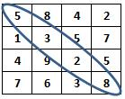

Ejercicios:
Construye un programa
completo en C libre de warnings y errores, que incluya las siguientes
funciones:
Utilizando la
estructura
#define, define las
constantes
REN de 4 y COL de 4, que serán el
número renglones y columnas respectivamente que tendrá la matriz
en el programa.
1. El procedimiento
llenaMatriz que recibe como
parámetros una matriz de enteros de REN por COL. El procedimiento almacenará en la
localidad correspondiente en la matriz un número aleatorio entre -25 y
20 Esto se realizará hasta llenar la matriz.
2. El procedimiento
imprimeMatriz, que recibe como parámetros una matriz de
enteros de REN por
COL. El procedimiento desplegará en pantalla el contenido
de la matriz.
3. La función
cuentaNegativos, que recibe
como parámetros una matriz de enteros de REN por COL. La
función regresará el número de elementos negativos en la matriz.
4. La función promedioMatriz, que recibe como parámetros una
matriz de enteros de REN por COL. La función regresará
el promedio de todos los elementos de la matriz.
5. El procedimiento posImparesMatriz, que recibe como parámetros una
matriz de enteros de REN por COL. El
procedimiento desplegará en pantalla el número del renglón y el
número de la columna donde se encuentran los elementos impares en la
matriz.
Por ejemplo,
si la matriz tiene los siguientes valores:
2 5
7 4
3
6 5 1
7
4 6 8
4
9 2 6
El procedimiento
desplegará en pantalla:
El valor 5 esta en
la posicion 0,1
El valor 7
esta en la posicion 0,2
El valor 3
esta en la posicion 1,0
El valor 5
esta en la posicion 1,2
El valor 1
esta en la posicion 1,3
El valor 7
esta en la posicion 2,0
El valor 9
esta en la posicion 3,1
6. La función menorMatriz, que recibe como parámetro una matriz
de valores enteros de REN por COL. La
función regresará el menor elemento contenido en la matriz.
7. La función sumaDiagonal que suma todos los elementos
que se encuentran en la diagonal de la matriz.
Suponiendo la
siguiente matriz:

sumaDiagonal
debería dar como resultado: 18
Escribe el código
necesario dentro del main para
desplegar el siguiente menú y brindarle al usuario la oportunidad de
ejecutar cualquiera de las funciones o procedimientos que han sido
construidos:
MENU
1. Capturar matriz
2. Imprimir matriz
3. Cuenta negativos
4. Promedio matriz
5. Posiciones de
valores impares en matriz
6. Menor matriz
7. Suma diagonal
8. Salir
Pulse la opción deseada:
Utilizando el ciclo do-while cicle el programa hasta
que el usuario seleccione opción de Salir (8)
Guarda el archivo con el nombre:
T_Matrícula.c